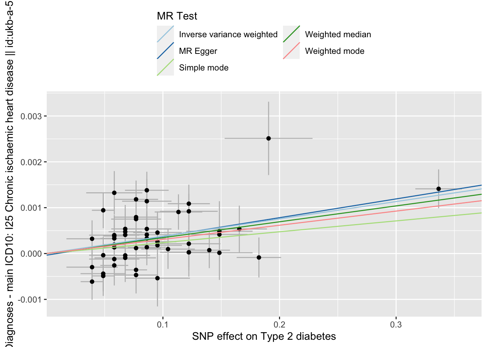
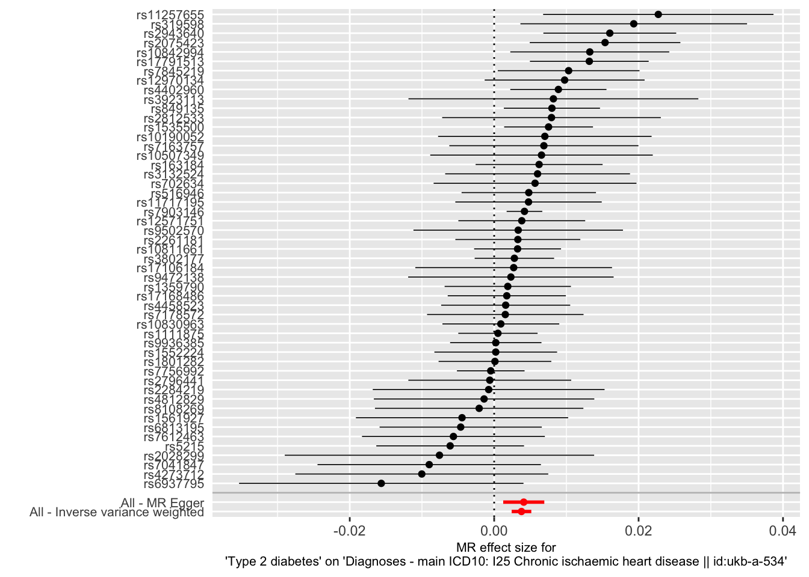
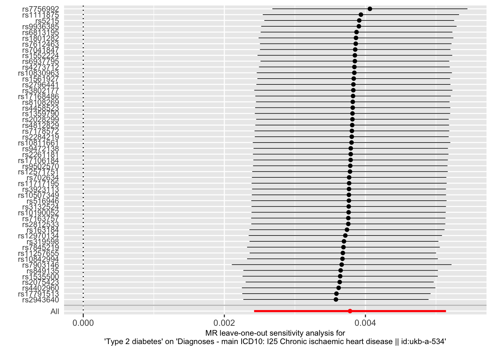
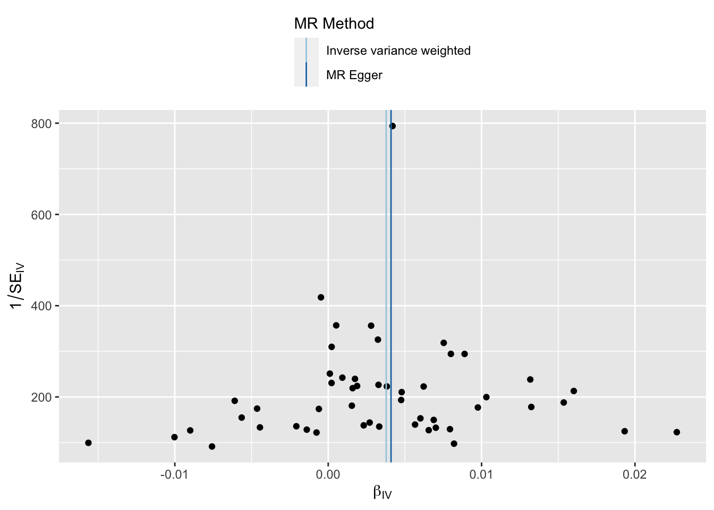

Chapter 15 Two Sample Mendelian Randomisation
So you took the hard way. You want to get your hands dirty yourself. Your choice.
As I wrote, we will use the TwoSampleMR package to assess the causal effect of type 2 diabetes on coronary artery disease and ischemic stroke.
Briefly, the workflow of a Two-Sample MR is as follows (see also diagram below):
- Select instruments for the exposure (perform LD clumping if necessary)
- Extract the instruments from the MR Base GWAS database for the outcomes of interest
- Harmonise the effect sizes for the instruments on the exposures and the outcomes to be each for the same reference allele
- Perform MR analysis, sensitivity analyses, create plots, compile reports

You need R 3.5.0 or higher to be able to install the packages you need.
install.packages("remotes")
remotes::install_github("MRCIEU/TwoSampleMR") # to run TwoSampleMR
library("TwoSampleMR")15.1 Loading the package
TwoSampleMR is free use. It used to require server-authentication using a gmail-account, now it doesn’t anymore. Should run into an issue, please refer to this page.
First we load the package.
library("TwoSampleMR")## TwoSampleMR version 0.5.6
## [>] New: Option to use non-European LD reference panels for clumping etc
## [>] Some studies temporarily quarantined to verify effect allele
## [>] See news(package='TwoSampleMR') and https://gwas.mrcieu.ac.uk for further details##
## Attaching package: 'TwoSampleMR'## The following object is masked from 'package:remotes':
##
## add_metadatalibrary("MRInstruments")15.2 Available outcome
We are ready to load in the available outcomes.
ao_mr <- available_outcomes()## API: public: http://gwas-api.mrcieu.ac.uk/15.3 Instruments
The MRInstruments-package, which comes with TwoSampleMR, includes several types of instruments:
- gwas_catalog, which includes data from GWAS collected by the GWAS Catalog
- metab_qtls, all known quantitative trait loci (meQTLs) associated to circulating metabolites
- proteomic_qtls, all known protein QTLs (pQTLs) associated to circulating protein levels
- gtex_eqtl, all known expression QTLs (eQTLs) associated to gene expression in 53 different tissues from GTEx Portal
- aries_mqtl, all known methylation QTLs (mQTLs) associated to DNA methylation in blood from ARIES
Let’s select T2D associated instruments.
data("gwas_catalog")
t2d_gwas <- subset(gwas_catalog, grepl("Mahajan", Author) & PubmedID == "24509480" & Phenotype == "Type 2 diabetes")
t2d_exp_dat <- format_data(t2d_gwas)## Warning in format_data(t2d_gwas): other_allele column has some values that are
## not A/C/T/G or an indel comprising only these characters or D/I. These SNPs will
## be excluded## Warning in format_data(t2d_gwas): The following SNP(s) are missing required information for the MR tests and will be excluded
## rs12427353
## rs3923113
## rs4430796
## rs516946
## rs6808574
## rs7612463
## rs7756992
## rs790314615.4 Clumping
Like with identifying independent GWAS hits, it is important for TwoSampleMR to ensure that the instruments for the exposure are independent. We can use MR Base to perform clumping. The European samples from the 1000 genomes project are used to estimate LD between SNPs. You can provide a list of SNP IDs, the SNPs will be extracted from 1000 genomes data, LD calculated between them, and amongst those SNPs that have LD R-square above the specified threshold only the SNP with the lowest P-value will be retained. To do this, use the following command.
t2d_exp_dat <- clump_data(t2d_exp_dat)## Please look at vignettes for options on running this locally if you need to run many instances of this command.## Clumping 5cQr3c, 62 variants, using EUR population reference## Removing 8 of 62 variants due to LD with other variants or absence from LD reference panel15.5 Outcomes
Right, so now we are ready to select the proper outcome, CAD. There are multiple datasets available in MRBase, the database used by TwoSampleMR. Let’s review them all and select one with the largest overlap with our exposure SNPs.
ao_twosamplemr <- available_outcomes()
ao_twosamplemr[grepl("heart disease", ao_twosamplemr$trait), ]## # A tibble: 27 × 23
## id trait note ncase group_name year consortium author sex population
## <chr> <chr> <chr> <int> <chr> <int> <chr> <chr> <chr> <chr>
## 1 finn-b… Majo… I9_C… 21012 public 2021 NA NA Male… European
## 2 ieu-a-8 Coro… <NA> 22233 public 2011 CARDIoGRAM Schun… Male… European
## 3 ukb-e-… I25 … NA 1205 public 2020 NA Pan-U… Male… South Asi…
## 4 ukb-b-… Diag… 4120… 5738 public 2018 MRC-IEU Ben E… Male… European
## 5 ieu-a-9 Coro… <NA> 63746 public 2013 CARDIoGRA… Delou… Male… Mixed
## 6 ieu-a-6 Coro… <NA> 15420 public 2011 C4D Peden Male… Mixed
## 7 ieu-a-7 Coro… <NA> 60801 public 2015 CARDIoGRA… Nikpay Male… Mixed
## 8 ukb-d-… Majo… NA 10157 public 2018 NA Neale… Male… European
## 9 ukb-a-… Diag… NA 8755 public 2017 Neale Lab Neale Male… European
## 10 ukb-b-… Diag… 4120… 5861 public 2018 MRC-IEU Ben E… Male… European
## # … with 17 more rows, and 13 more variables: unit <chr>, nsnp <int>,
## # sample_size <int>, build <chr>, ncontrol <int>, subcategory <chr>,
## # category <chr>, ontology <chr>, doi <chr>, mr <int>, priority <int>,
## # pmid <int>, sd <dbl>chd_out_dat <- extract_outcome_data(
snps = t2d_exp_dat$SNP,
outcomes = "UKB-a:534"
)## Deprecated IDs being used? Detected numeric IDs. Trying to fix, but please note the changes below for future.## UKB-a:534 -> ukb-a-534## Extracting data for 54 SNP(s) from 1 GWAS(s)15.5.1 Harmonisation
It is important to make sure that the effect allele associated to T2D of any given SNP is the same as the effect allele associated CAD. In other words, we need to harmonise the data.
dat <- harmonise_data(
exposure_dat = t2d_exp_dat,
outcome_dat = chd_out_dat
)## Harmonising Type 2 diabetes (5cQr3c) and Diagnoses - main ICD10: I25 Chronic ischaemic heart disease || id:ukb-a-534 (ukb-a-534)## Removing the following SNPs for being palindromic with intermediate allele frequencies:
## rs1727313, rs24308815.5.2 Mendelian randomisation
Now that the data is harmonised, we are ready to perform a MR and test for a causal relation of T2D with CAD.
res <- mr(dat)## Analysing '5cQr3c' on 'ukb-a-534'DT::datatable(res, caption = "MR of type 2 diabetes and coronary artery disease", rownames = FALSE)Several tests are applied. You can change the method(s) applied by using the method_list flag. Below a list of available methods.
knitr::kable(mr_method_list(), caption = "Available MR methods", row.names
= FALSE)| obj | name | PubmedID | Description | use_by_default | heterogeneity_test |
|---|---|---|---|---|---|
| mr_wald_ratio | Wald ratio | TRUE | FALSE | ||
| mr_two_sample_ml | Maximum likelihood | FALSE | TRUE | ||
| mr_egger_regression | MR Egger | 26050253 | TRUE | TRUE | |
| mr_egger_regression_bootstrap | MR Egger (bootstrap) | 26050253 | FALSE | FALSE | |
| mr_simple_median | Simple median | FALSE | FALSE | ||
| mr_weighted_median | Weighted median | TRUE | FALSE | ||
| mr_penalised_weighted_median | Penalised weighted median | FALSE | FALSE | ||
| mr_ivw | Inverse variance weighted | TRUE | TRUE | ||
| mr_ivw_radial | IVW radial | FALSE | TRUE | ||
| mr_ivw_mre | Inverse variance weighted (multiplicative random effects) | FALSE | FALSE | ||
| mr_ivw_fe | Inverse variance weighted (fixed effects) | FALSE | FALSE | ||
| mr_simple_mode | Simple mode | TRUE | FALSE | ||
| mr_weighted_mode | Weighted mode | TRUE | FALSE | ||
| mr_weighted_mode_nome | Weighted mode (NOME) | FALSE | FALSE | ||
| mr_simple_mode_nome | Simple mode (NOME) | FALSE | FALSE | ||
| mr_raps | Robust adjusted profile score (RAPS) | FALSE | FALSE | ||
| mr_sign | Sign concordance test | Tests for concordance of signs between exposure and outcome | FALSE | FALSE | |
| mr_uwr | Unweighted regression | Doesn’t use any weights | FALSE | TRUE |
15.5.3 Heterogeneity & Pleiotropy
Many genetic variants are associated to multiple traits, thus pleiotropy is common and widespread in the human genome. This poses as an issue to tease apart causal relations in Mendelian randomisation. Vertical pleiotropy arises because a SNP influences one trait, which in turn influences another. We can use MR to estimate the causal influence between the traits. Horizontal pleiotropy arises due to SNPs influencing two traits through independent pathways(Hemani G. 2018).
Further, we should test for study heterogeneity.
mr_heterogeneity(dat)## id.exposure id.outcome
## 1 5cQr3c ukb-a-534
## 2 5cQr3c ukb-a-534
## outcome
## 1 Diagnoses - main ICD10: I25 Chronic ischaemic heart disease || id:ukb-a-534
## 2 Diagnoses - main ICD10: I25 Chronic ischaemic heart disease || id:ukb-a-534
## exposure method Q Q_df Q_pval
## 1 Type 2 diabetes MR Egger 67.8423 49 0.03851066
## 2 Type 2 diabetes Inverse variance weighted 67.9269 50 0.04653850mr_pleiotropy_test(dat)## id.exposure id.outcome
## 1 5cQr3c ukb-a-534
## outcome
## 1 Diagnoses - main ICD10: I25 Chronic ischaemic heart disease || id:ukb-a-534
## exposure egger_intercept se pval
## 1 Type 2 diabetes -3.691553e-05 0.0001493361 0.805788115.5.4 Leave-one-out
It is also key to inspect the causal effects per SNP and perform a leave-one-out analysis.
res_single <- mr_singlesnp(dat)
DT::datatable(res_single, caption = "Single SNP MR analysis", rownames = FALSE)res_loo <- mr_leaveoneout(dat)
DT::datatable(res_loo, caption = "Leave-one-out MR analysis", rownames = FALSE)15.5.5 Visualisation
It is important to present the causal inference graphically.
Scatter plot
res <- mr(dat)## Analysing '5cQr3c' on 'ukb-a-534'p1 <- mr_scatter_plot(res, dat)
p1## $`5cQr3c.ukb-a-534`
##
## attr(,"split_type")
## [1] "data.frame"
## attr(,"split_labels")
## id.exposure id.outcome
## 1 5cQr3c ukb-a-534Single SNP plot
res_single <- mr_singlesnp(dat)
p2 <- mr_forest_plot(res_single)
p2## $`5cQr3c.ukb-a-534`## Warning: Removed 1 rows containing missing values (geom_errorbarh).## Warning: Removed 1 rows containing missing values (geom_point).
##
## attr(,"split_type")
## [1] "data.frame"
## attr(,"split_labels")
## id.exposure id.outcome
## 1 5cQr3c ukb-a-534Leave-One-Out plot
res_loo <- mr_leaveoneout(dat)
p3 <- mr_leaveoneout_plot(res_loo)
p3## $`5cQr3c.ukb-a-534`## Warning: Removed 1 rows containing missing values (geom_errorbarh).## Warning: Removed 1 rows containing missing values (geom_point).
##
## attr(,"split_type")
## [1] "data.frame"
## attr(,"split_labels")
## id.exposure id.outcome
## 1 5cQr3c ukb-a-534Funnel plot
res_single <- mr_singlesnp(dat)
p4 <- mr_funnel_plot(res_single)
p4## $`5cQr3c.ukb-a-534`
##
## attr(,"split_type")
## [1] "data.frame"
## attr(,"split_labels")
## id.exposure id.outcome
## 1 5cQr3c ukb-a-534